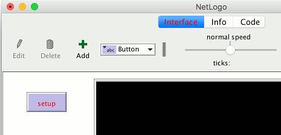
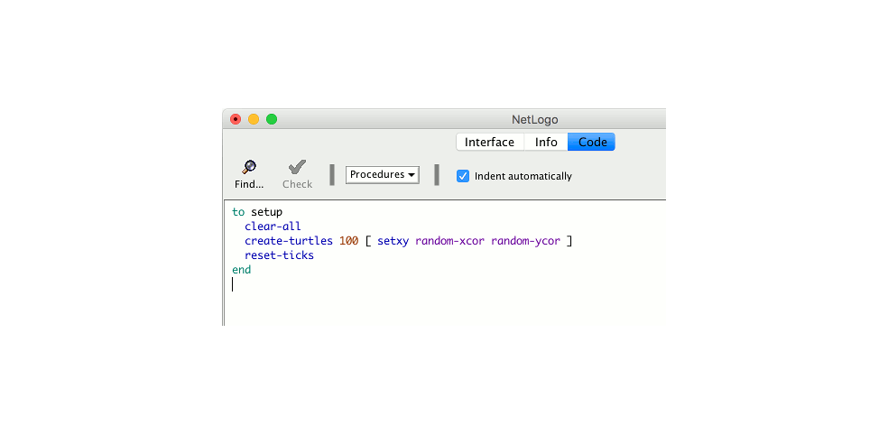
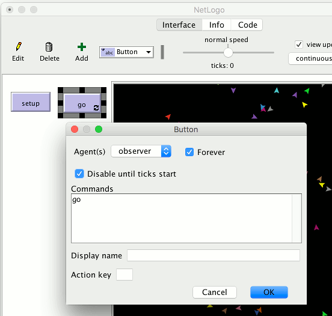
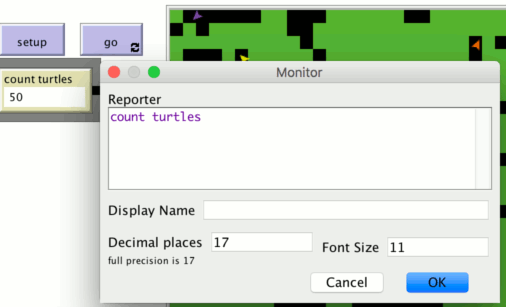
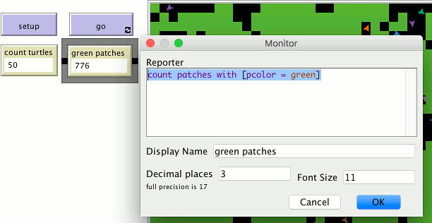
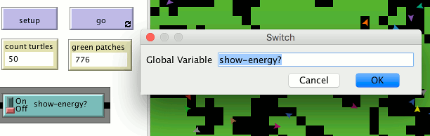
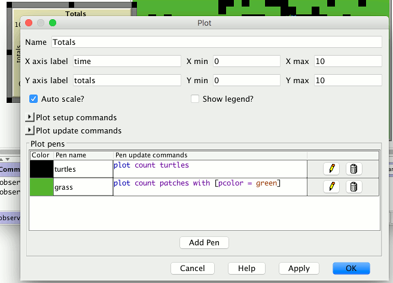
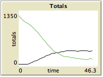

This tutorial leads you through the process of building a complete model, built up in stages, with every step explained along the way.
In Tutorial #2, you learned how to use the command center and agent monitors to inspect and modify agents and make them do things. Now you’re ready to learn about the real heart of a NetLogo model: the Code tab.
You’ve seen that agents in NetLogo are divided into patches, turtles, links, and the observer. Patches are stationary and arranged in a grid. Turtles move over that grid. Links connect two turtles. The observer oversees everything that’s going on and does whatever the turtles, patches and links can’t do for themselves.
All four types of agents can run NetLogo commands. All four can also run “procedures”. A procedure combines a series of NetLogo commands into a single new command that you define.
You will now learn to write procedures that make turtles move, eat, reproduce, and die. You will also learn how to make monitors, sliders, and plots. The model we’ll build is a simple ecosystem model not unlike Wolf Sheep Predation from Tutorial #1.
To start a new model, select “New” from the File menu. Then begin by creating a setup button:
- Click the “Add” icon in the toolbar at the top of the Interface tab.
- On the menu next to Add, select Button (if it isn’t already selected).
- Click wherever you want the button to appear in the empty white area of the Interface tab.
- A dialog box for editing the button opens. Type
setupin the box labeled “Commands”.- Press the OK button when you’re done; the dialog box closes.
Now you have a setup button. Pressing the button runs a procedure called “setup”. A procedure is a sequence of NetLogo commands that we assign a new name. We’ll define that procedure soon, but we haven’t yet. The button refers to a procedure that doesn’t exist, so the button turns red: 
If you want to see the actual error message, click the button.
Now we’ll create the “setup” procedure, so the error message will go away:
- Switch to the Code tab.
- Type the following:
to setup clear-all create-turtles 100 [ setxy random-xcor random-ycor ] reset-ticks end
When you’re done, the Code tab looks like this: 
Note that some lines are indented. Most people find it helpful to indent their code. It isn’t mandatory, but it makes the code easier to read and change.
Your procedure begins with to and ends with end. Every procedure begins
and ends with these words.
Let’s look at what you typed in and see what each line of your procedure does:
to setup begins defining a procedure named “setup”.clear-all resets the world to an initial, empty state. All the patches
turn black and any turtles you might have created disappear. Basically, it
wipes the slate clean for a new model run.create-turtles 100 creates 100 turtles. They start out standing at the
origin, that is, the center of patch 0,0.create-turtles we can put commands for the new turtles to run,
enclosed by square brackets.setxy random-xcor random-ycor is a command using “reporters”. A reporter, as
opposed to a command, reports a result. First each turtle runs the reporter
random-xcor which will report a random number from the
allowable range of turtle coordinates along the X axis. Then each turtle runs
the reporter random-ycor, same for the Y axis. Finally each
turtle runs the setxy command with those two numbers as inputs. That makes
the turtle move to the point with those coordinates.reset-ticks starts the tick counter, now that setup is otherwise complete.end completes the definition of the “setup” procedure.When you’re done typing, switch to the Interface tab and press the setup button
you made before. You will see the turtles scattered around the world:
Press setup a couple more times, and see how the arrangement of turtles is different each time. Note that some turtles may be right on top of each other.
Think a bit about what you needed to do to make this happen. You needed to make a button in the interface and make a procedure that the button uses. The button only worked once you completed both of these separate steps. In the remainder of this tutorial, you will often have to complete two or more similar steps to add another feature to the model. If something doesn’t appear to work after you completed what you thought is the final step for that new feature, continue to read ahead to see if there is still more to do. After reading ahead for a couple of paragraphs, you should then go back over the directions to see if there is any step you might have missed.
Now that we’re using the tick counter (with reset-ticks), we should tell
NetLogo that it only needs to update the view once per tick, instead of
continuously updating it.
- Find the view updates menu. It’s above the view and by default says “continuous”.
- Choose “on ticks” instead.
This makes your model run faster and ensures a consistent appearance (since the updates will happen at consistent times). See the Programming Guide for a fuller discussion of view updates.
Now make a button called “go”. Follow the same steps you used to make the setup button, except:
- For Commands enter
goinstead ofsetup.- Check the “Forever” checkbox in the edit dialog.
- Check the “Disable until ticks start” checkbox too.

The “Forever” checkbox makes the button stay down once pressed, so its commands run over and over again, not just once.
The “Disable until ticks start” prevents you from pressing go before setup.
- Then add a go procedure to the Code tab:
to go move-turtles tick end
tick is a primitive that advances the tick counter by one tick.
But what is move-turtles? Is it a primitive (in other words, built-in to
NetLogo)? No, it’s another procedure that you’re about to add. So far, you have
introduced two procedures that you added yourself: setup and go.
- Add the
move-turtlesprocedure after thegoprocedure:to go move-turtles tick end to move-turtles ask turtles [ right random 360 forward 1 ] end
Note there are no spaces around the hyphen in move-turtles. In Tutorial #2 we
used red - 2, with spaces, in order to subtract two numbers, but here we want
move-turtles, without spaces. The “-” combines “move” and “turtles” into a
single name.
Here is what each command in the move-turtles procedure does:
ask turtles [ ... ] says that each turtle should run the commands in the
brackets.right random 360 is another command that uses a reporter. First, each turtle
picks a random whole number between 0 and 359.
(random doesn’t include the number you give it as a possible result.) Then
the turtle turns right this number of degrees.forward 1 makes the turtle move forward one step.Why couldn’t we have just written all of these commands in go instead of in a
separate procedure? We could have, but during the course of building your
project, it’s likely that you’ll add many other parts. We’d like to keep go as
simple as possible, so that it is easy to understand. Eventually, it will
include many other things you want to have happen as the model runs, such as
calculating something or plotting the results. Each of these things to do will
have its own procedure and each procedure will have its own unique name.
The ‘go’ button you made in the Interface tab is a forever button, meaning that it will continually run its commands until you shut it off (by clicking on it again). After you have pressed ‘setup’ once, to create the turtles, press the ‘go’ button. Watch what happens. Turn it off, and you’ll see that all the turtles stop in their tracks.
Note that if a turtle moves off the edge of the world, it “wraps”, that is, it appears on the other side. (This is the default behavior. It can be changed; see the Topology section of the Programming Guide for more information.)
We suggest you start experimenting with other turtle commands.
Type commands into the Command Center (like turtles> set color red), or add
commands to setup, go, or move-turtles.
Note that when you enter commands in the Command Center, you must choose
turtles>, patches>, links>, or observer> in the popup menu on the left,
depending on which agents are going to run the commands. It’s just like using
ask turtles or ask patches, but saves typing. You can also use the tab key
to switch agent types, which you might find more convenient than using the menu.
You might try typing turtles> pen-down into the Command Center and then
pressing the go button.
Also, inside the move-turtles procedure you can try changing
right random 360 to right random 45.
Play around. It’s easy and the results are immediate and visible – one of NetLogo’s many strengths.
When you feel you’ve done enough experimenting for now, you’re ready to continue improving the model you are building.
Now we’ve got 100 turtles aimlessly moving around, completely unaware of anything else around them. Let’s make things a little more interesting by giving these turtles a nice background against which to move.
Go back to the
setupprocedure. We can rewrite it as follows:to setup clear-all setup-patches setup-turtles reset-ticks endThe new definition of
setuprefers to two new procedures. To definesetup-patches, add this:to setup-patches ask patches [ set pcolor green ] endThe
setup-patchesprocedure sets the color of every patch to green to start with. (A turtle’s color variable iscolor; a patch’s ispcolor.)The only part remaining in our new ‘setup’ that is still undefined is
setup-turtles.
- Add this procedure too:
to setup-turtles create-turtles 100 ask turtles [ setxy random-xcor random-ycor ] endDid you notice that the new
setup-turtlesprocedure has most of the same commands as the oldsetupprocedure?
- Switch back to the Interface tab.
- Press the setup button.
Voila! A lush NetLogo landscape complete with turtles and green patches appears:

After seeing the new setup procedure work a few times, you may find it helpful
to read through the procedure definitions again.
So we have some turtles running around on a landscape, but they aren’t doing anything with it. Let’s add some interaction between the turtles and the patches.
We’ll make the turtles eat “grass” (the green patches), reproduce, and die. The grass will gradually grow back after it is eaten.
We’ll need a way of controlling when a turtle reproduces and dies. We’ll determine that by keeping track of how much “energy” each turtle has. To do that we need to add a new turtle variable.
You’ve already seen built-in turtle variables like color. To make a new
turtle variable, we add a turtles-own declaration at the top of the Code
tab, before all the procedures. Call it energy:
turtles-own [energy]
to go
move-turtles
eat-grass
tick
end
Let’s use this newly defined variable (energy) to allow the turtles to eat.
- Switch to the Code tab.
- Rewrite the
goprocedure as follows:to go move-turtles eat-grass tick endAdd a new
eat-grassprocedure:to eat-grass ask turtles [ if pcolor = green [ set pcolor black set energy energy + 10 ] ] end
We are using the if command for the first time. Look at the code carefully.
Each turtle, when it runs these commands, compares the value of the patch color
it is on (pcolor) to the value for green. (A turtle has direct access to
the variables of the patch it is standing on.) If the patch color is green, the
comparison reports true, and only then will the turtle run the commands inside
the brackets (otherwise it skips them). The commands make the turtle change the
patch color to black and increase its own energy by 10. The patch turns black to
signify that the grass at that spot has been eaten. And the turtle is given more
energy, from having just eaten.
Next, let’s make the movement of turtles use up some of the turtle’s energy.
- Rewrite
move-turtlesas follows:to move-turtles ask turtles [ right random 360 forward 1 set energy energy - 1 ] end
As each turtle wanders, it will lose one unit of energy at each step.
- Switch to the Interface tab now and press the setup button and the go button.
You’ll see the patches turn black as turtles travel over them.
Next you will create two monitors in the Interface tab with the toolbar. (You make them just like buttons and sliders, using the Add icon on the toolbar.) Let’s make the first monitor now.
- Create a monitor by clicking the Add icon on the toolbar, selecting Monitor next to it, and clicking on an open spot in the Interface.
A dialog box will appear.
- In the dialog type:
count turtles(see image below).- Press the OK button to close the dialog.

turtles is an “agentset”, the set of all turtles. count tells us how
many agents are in that set.
Let’s make the second monitor now:
- Create a monitor by clicking the Add icon on the toolbar, selecting Monitor next to it, and clicking on an open spot in the Interface.
A dialog box will appear.
- In the Reporter section of the dialog box type:
count patches with [pcolor = green](see image below).- In the Display name section of the dialog box type:
green patches- Press the OK button to close the dialog box.

Here we’re using count again to see how many agents are in an agentset.
patches is the set of all the patches, but we don’t just want to know how
many patches there are total, we want to know how many of them are green. That’s
what with does; it makes a smaller agentset of just those agents for whom
the condition in the brackets is true. The condition is pcolor = green, so
that gives us just the green patches.
Now we have two monitors that will report how many turtles and green patches we have, to help us track what’s going on in our model. As the model runs, the numbers in the monitors will automatically change.
- Use the setup and go buttons and watch the numbers in the monitors change.
The turtles aren’t just turning the patches black. They’re also gaining and losing energy. As the model runs, try using a turtle monitor to watch one turtle’s energy go up and down.
It would be nicer if we could see every turtle’s energy all the time. We will now do exactly that, and add a switch so we can turn the extra visual information on and off.
- Click on the Add icon on the toolbar (in the Interface tab).
- Select Switch from the menu next to Add.
- Click on an open spot in the interface.
A dialog will appear.
- Into the Global variable field, type
show-energy?Don’t forget to include the question mark in the name. (See image below.)

- Now go back to the ‘go’ procedure using the Code tab with the Toolbar.
- Rewrite the
eat-grassprocedure as follows:to eat-grass ask turtles [ if pcolor = green [ set pcolor black set energy energy + 10 ] ifelse show-energy? [ set label energy ] [ set label "" ] ] end
The eat-grass procedure introduces the ifelse command. Look at the code
carefully. Each turtle, when it runs these new commands, checks the value of
show-energy? (determined by the switch). If the switch is on, comparison is
true and the turtle will run the commands inside the first set of brackets. In
this case, it assigns the value for the energy to the label of the turtle. If
the comparison is false (the switch is off) then the turtle runs the commands
inside the second set of brackets. In this case, it removes the text labels (by
setting the label of the turtle to be nothing).
(In NetLogo, a piece of text is called a “string”, short for string of characters. A string is a sequence of letters or other characters, written between double quotes. Here we have two double quotes right next to each other, with nothing in between them. That’s an empty string. If a turtle’s label is an empty string, no text is attached to the turtle.)
- Test this in the Interface tab, by running the model (using the setup and go buttons) switching the
show-energy?switch back and forth.
When the switch is on, you’ll see the energy of each turtle go up each time it
eats grass. You’ll also see its energy going down whenever it moves.

Now our turtles are eating. Let’s make them reproduce and die, too. And let’s make the grass grow back. We’ll add all three of these of these behaviors now, by making three separate procedures, one for each behavior.
- Go to the Code tab.
- Rewrite the
goprocedure as follows:to go move-turtles eat-grass reproduce check-death regrow-grass tick endAdd the procedures for
reproduce,check-death, andregrow-grassas shown below:to reproduce ask turtles [ if energy > 50 [ set energy energy - 50 hatch 1 [ set energy 50 ] ] ] end to check-death ask turtles [ if energy <= 0 [ die ] ] end to regrow-grass ask patches [ if random 100 < 3 [ set pcolor green ] ] end
Each of these procedures uses the if command. Each turtle, when it runs
check-death it will check to see if its energy is less or equal to 0. If this
is true, then the turtle is told to die (die is a NetLogo primitive).
When each turtle runs reproduce, it checks the value of the turtle’s energy
variable. If it is greater than 50, then the turtle runs the commands inside the
first set of brackets. In this case, it decreases the turtle’s energy by 50,
then ‘hatches’ a new turtle with an energy of 50. The hatch command is a
NetLogo primitive which looks like this: hatch number [ commands ]. This
turtle creates number new turtles, each identical to its parent, and asks the
new turtle(s) that have been hatched to run commands. You can use the commands
to give the new turtles different colors, headings, or whatever. In our case we
run one command. We set the energy for the newly hatched turtle to be 50.
When each patch runs regrow-grass it will check to see if a random integer
from 0 to 99 is less than 3. If so, the patch color is set to green. This will
happen 3% of the time (on average) for each patch, since there are three numbers
(0, 1, and 2) out of 100 possible that are less than 3.
- Switch to the Interface tab now and press the setup and go buttons.
You should see some interesting behavior in your model now. Some turtles die off, some new turtles are created (hatched), and some grass grows back. This is exactly what we set out to do.
If you continue to watch your monitors in your model, you will see that the count turtles and green patches monitors both fluctuate. Is this pattern of fluctuation predictable? Is there a relationship between the variables?
It’d be nice if we had a easier way to track the changes in the model behavior over time. NetLogo allows us to plot data as we go along. That will be our next step.
To make plotting work, we’ll need to create a plot in the Interface tab and put some commands inside it.
The commands we put in the plots will run automatically when our setup
procedure calls reset-ticks and when our go procedure calls tick.
- Create a plot by clicking the Add icon on the toolbar, selecting Plot next to it, and clicking on an open spot in the Interface.
- Set its Name to “Totals” (see image below)
- Set the X axis label to “time”
- Set the Y axis label to “totals”
- Change the name of the “default” pen to “turtles”.
- Enter
plot count turtlesunder Pen Update Commands.- Press the “Add Pen” button.
- Change the name of the new pen to “grass”.
- Enter
plot count patches with [pcolor = green]under Pen Update Commands.
When you’re done, the dialog should look like this: 
- Press OK in the Plot dialog to finish editing.
Note that when you create the plot you can also set the minimum and maximum values on the X and Y axes. You’ll want to leave the “Auto Scale” checkbox checked, so that if anything you plot exceeds the minimum and maximum values for the axes, the axes will automatically grow so you can see all the data.
Note that we used the plot command to add the next point to a plot. This
command moves the current plot pen to the point that has an X coordinate equal
to 1 greater than the previously plotted X coordinate and a Y coordinate equal
to the value given in the plot command (in the first case, the number of
turtles, and in the second case, the number of green patches). As the pens move
they each draw a line.
- Setup and run the model again.
You can now watch the plot being drawn as the model is running. Your plot should have the general shape of the one below, though your plot might not look exactly the same.
Remember that we left “Auto Scale?” on. This allows the plot to readjust itself when it runs out of room. 
If you forget which pen is which, you can edit the plot and check the “Show legend?” checkbox.
You might try running the model several times to see what aspects of the plot are the same and which are different from run to run.
To make comparisons between plots from one model run and another, it is often
useful to do the comparison for the same length of model run. Learning how to
stop or start an action at a specific time can help make this happen by stopping
the model at the same point each model run. Keeping track of how many times the
go procedure is run is a useful way to cue these actions. That’s what the tick
counter does.
You’re already using the tick counter in your model, with the reset-ticks and
tick commands, which also trigger plotting.
You can also use the tick counter for other things, such as to set a limit on the total length of a run.
Change the
goprocedure:to go if ticks >= 500 [ stop ] move-turtles eat-grass check-death reproduce regrow-grass tick endNow setup and run the model.
The graph and model won’t keep running forever. They should stop automatically when the tick counter in the Interface tab’s toolbar reaches 500.
The tick command advances the tick counter by 1. ticks is a reporter
which reports the current value of the tick counter. reset-ticks, in your
setup procedure, takes care of restarting the tick counter at 0 when a new run
is set up and ready to begin.
First, instead of always using 100 turtles, you can have a varying number of turtles.
- Create a slider named “number”: click the Add icon on the toolbar, select Slider next to it, and click on an open spot in the interface.
- Try changing the minimum and maximum values in the slider.
- Then inside of
setup-turtles, instead ofcreate-turtles 100you can type:to setup-turtles create-turtles number [ setxy random-xcor random-ycor ] end
Test this change and compare how having more or fewer turtles initially affect the plots over time.
Second, wouldn’t it be nice to adjust the energy the turtles gain and lose as they eat grass and reproduce?
- Make a slider called
energy-from-grass.- Make another slider called
birth-energy.- Then, inside of
eat-grass,make this change:to eat-grass ask turtles [ if pcolor = green [ set pcolor black set energy (energy + energy-from-grass) ] ifelse show-energy? [ set label energy ] [ set label "" ] ] endAnd, inside of
reproduce, make this change:to reproduce ask turtles [ if energy > birth-energy [ set energy energy - birth-energy hatch 1 [ set energy birth-energy ] ] ] end
Finally, what other slider could you add to vary how often grass grows back? Are there rules you can add to the movement of the turtles or to the newly hatched turtles that happen only at certain times? Try writing them.
So now you have a simple model of an ecosystem. Patches grow grass. Turtles wander, eat the grass, reproduce, and die.
You have created an interface containing buttons, sliders, switches, monitors, and a plot. You’ve even written a series of procedures to give the turtles something to do.
That’s where this tutorial leaves off.
If you’d like to look at some more documentation about NetLogo, the Interface Guide section of the manual walks you through every element of the NetLogo interface in order and explains its function. For a detailed description and specifics about writing procedures, refer to the Programming Guide. All of the primitives are listed and described in the NetLogo Dictionary.
Also, you can continue experimenting with and expanding this model if you’d like, experimenting with different variables and behaviors for the agents.
Alternatively, you may want to revisit the first model in the tutorial, Wolf
Sheep Predation. This is the model you used in Tutorial #1. In the Wolf Sheep
Predation model, you saw sheep move around, consume resources that are
replenished occasionally (grass), reproduce under certain conditions, and die if
they ran out of resources. But that model had another type of creature moving
around – wolves. The addition of wolves requires some additional procedures and
some new primitives. Wolves and sheep are two different “breeds” of turtle. To
see how to use breeds, study Wolf Sheep Predation.
Alternatively, you can look at other models (including the many models in the Code Examples section of the Models Library) or even go ahead and build your own model. You don’t even have to model anything. It can be interesting just to watch patches and turtles forming patterns, to try to create a game to play, or whatever.
Hopefully you have learned some things, both in terms of the NetLogo language and about how to go about building a model. The entire set of procedures that was created above is shown below.
The complete model is also available in NetLogo’s Models Library, in the Code Examples section. It’s called “Tutorial 3”.
Notice that this listing is full of “comments”, which begin with semicolons. Comments let you mix an explanation the code right in with the code itself. You might use comments to help others understand your model, or you might use them as notes to yourself.
In the Code tab, comments are gray, so your eyes can pick them out easily.
turtles-own [energy] ;; for keeping track of when the turtle is ready
;; to reproduce and when it will die
to setup
clear-all
setup-patches
setup-turtles
reset-ticks
end
to setup-patches
ask patches [ set pcolor green ]
end
to setup-turtles
create-turtles number ;; uses the value of the number slider to create turtles
ask turtles [ setxy random-xcor random-ycor ]
end
to go
if ticks >= 500 [ stop ] ;; stop after 500 ticks
move-turtles
eat-grass
check-death
reproduce
regrow-grass
tick ;; increase the tick counter by 1 each time through
end
to move-turtles
ask turtles [
right random 360
forward 1
set energy energy - 1 ;; when the turtle moves it looses one unit of energy
]
end
to eat-grass
ask turtles [
if pcolor = green [
set pcolor black
;; the value of energy-from-grass slider is added to energy
set energy energy + energy-from-grass
]
ifelse show-energy?
[ set label energy ] ;; the label is set to be the value of the energy
[ set label "" ] ;; the label is set to an empty text value
]
end
to reproduce
ask turtles [
if energy > birth-energy [
set energy energy - birth-energy ;; take away birth-energy to give birth
hatch 1 [ set energy birth-energy ] ;; give this birth-energy to the offspring
]
]
end
to check-death
ask turtles [
if energy <= 0 [ die ] ;; removes the turtle if it has no energy left
]
end
to regrow-grass
ask patches [ ;; 3 out of 100 times, the patch color is set to green
if random 100 < 3 [ set pcolor green ]
]
end